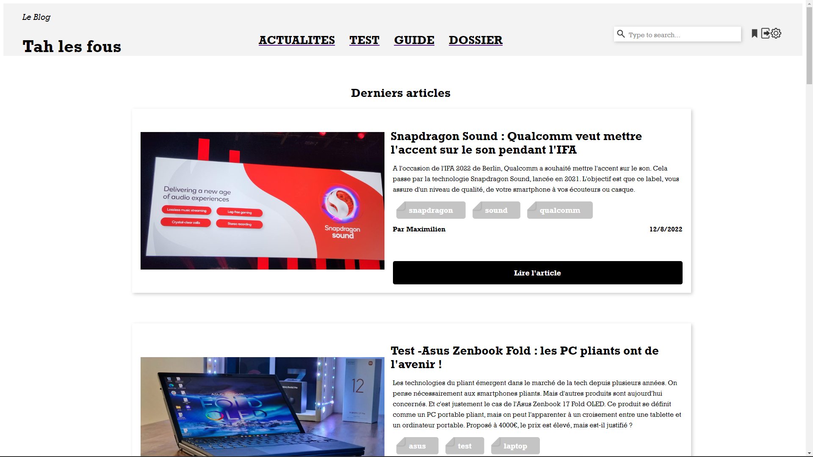

Développement Web - Création d'un blog sans CMS
Dans le monde du Web, il existe de nombreux CMS qui peuvent permettre la création de blog, comme Wordpress. Mais pour continuer d'acquérir des compétences en Web, on peut faire son blog par soi-même. Il s'agit donc ici de permettre la consultation d'articles, les filtrer par catégories, pouvoir commenter, et liker ces articles là. Egalement, il doit être possible de se connecter pour accéder à ses favoris, en tant qu'utilisateur basique.
Caractéristiques techniques du projet
Langages / technologies utilisés
Il y a une double facette autour de ce projet. D'une part, il y a une partie front end (la partie visible du site, style …) qui doit être gérée. D'autre part, la partie back end (les "rouages" du site) doit gérer le stockage des articles, des likes, des favoris, des commentaires, des informations des utilisateurs …
Pour ce faire, le backend se base sur quelques technologies et un framework :
- KoaJS pour le framework
- MySQL pour la gestion de la base de données
- Redis
Aussi, la partie front quant à elle se base sur un simple frakemework, VueJS. J'étais d'ailleurs en charge de cette partie front, qui devait donc exploiter les données ou permettre d'en ajouter.
Combien de temps, qui et quoi ?
Ce projet s'inscrit dans les cours de Web dispensés durant mon BUT Informatique. L'ambition était donc de réaliser ce blog sans CMS, comme précisé plus haut. Nous étions 2 sur le projet, Farouk Abidi et moi-même. Lui s'est occupé de la partie backend, et moi la partie frontend.
Ce projet s'est étalé sur 2 mois environ, à raison d'une trentaine d'heures. Cela comprend la réalisation concrète du projet, mais aussi le temps de formation, pour ma part sur VueJS (utilisation du framework, router …).
Détails du projet
Ce projet s'articule sous différents points. Il y a tout d'abord une partie au niveau de la consultation des articles (en liste, et dans leur détail). Il est aussi question de la gestion du profil utilisateur. D'une part, il y a les utilisateurs classiques, qui doivent pouvoir liker et commenter un article, mais aussi mettre en favori un article. D'autre part, les administrateurs doivent pouvoir faire la même chose, mais aussi créer des articles et les poster.
Consultation des articles
L'objet principal de ce blog, c'est afficher tous les articles à la suite, pouvoir les filtrer par catégorie, et lire un article. Ainsi, sur la page principale, vous pouvez voir tous les derniers articles, par chronologie inversée de parution (plus récents en premier, plus anciens en dernier). En haut de la page principale, on peut choisir une catégorie d'articles en particulier. Ici, ce sont "Actualités", "Tests", "Dossier" et "Guide".
Ensuite, une fois que l'on s'intéresse à un article en particulier, on peut lire cet article. La structure de celui-ci est comme une page Web classique. Cela veut donc dire que l'on a une miniature principale avec le titre, l'auteur … Mais le contenu en lui-même, ce sont des titres 2 ou 3, des paragraphes … Cela passe par un WYSIWYG pour obtenir cette structure, mais j'y reviendrai plus tard.
Profil utilisateur
Un utilisateur a donc la possibilité, une fois sur un article, de le liker s'il le souhaite. Parce que l'objectif, ce sont d'avoir des bonnes stats, on ne peut pas retirer un like (logique). De même pour les commentaires, on peut en rajouter, avec le contenu et le pseudo, pseudo lié au login de l'utilisateur.
En effet, on peut donc se login et se créer des comptes sur le site, mais c'est une partie plus gérée en backend, je ne m'étalerai donc pas sur le sujet.
Autrement, une autre action possible de l'utilisateur, c'est de rajouter un article en favori. Une fois que celui-ci est dans la liste des favoris de l'utilisateur, il peut être consulté depuis un onglet "Favori" en haut à droite de l'affichage. Tout l'affichage relevant du fait que l'on soit connecté ou non est dynamique. Ainsi, si vous n'êtes pas connecté, vous ne voyez qu'un bouton vous invitant à vous login. Si vous êtes effectivement connecté, ce bouton disparaît, pour laisser la possibilité de vous déconnecter, ou consulter vos favoris.
Enfin, la partie administrateur. Si êtes un privilégié sur le site, vous pouvez ajouter des articles pour le blog. Cela passe donc par un WYSIWYG, comme précisé plus haut. On doit donc renseigner d'abord des champs, dont le titre, l'image, les catégories … Mais pour le contenu, on peut écrire de manière naturelle, avec une hiérarchisation de l'information possible (H2, H3, p …).
Auto-critique du résultat
Sur ce projet, nous étions sur un temps imparti limité. Il était donc nécessaire de remplir les objectifs, qui sont exactement tout ce que je vous ai cité. Parmi ceux-ci, certains étaient requis, d'autres optionnels (commentaires et likes, ainsi que le CSS du site). Autrement, les fonctionnalités ont été bien implémentées au sein du projet, à travers Git, comme sur la plupart de mes projets désormais.
La seul critique négative, ça serait qu'il manque de feedback sur le site. Si nous nous trompons pour la connexion, l'utilisateur ne sait pas si c'est son login ou son mot de passe qui est incorrect. De même pour la partie création de compte. De manière générale, une partie UX serait à faire, mais ce n'était pas l'objectif ici.